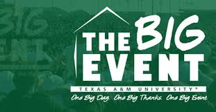
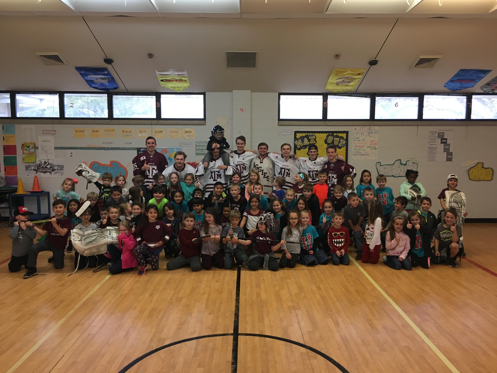
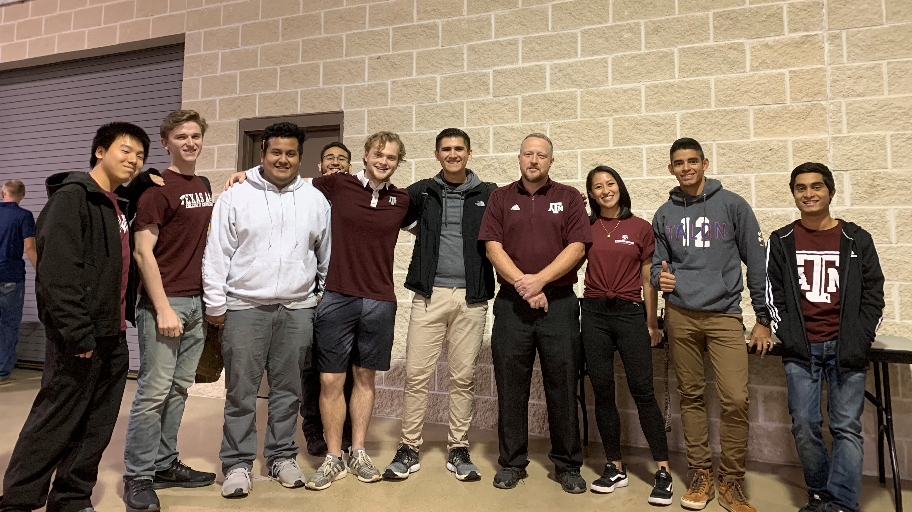

SERVICE
Big Event and Community Involvement
To start my service page, I would like to talk about when I took part of Big Event. When I still played hockey, the goal for the team was to not only become better athletes but to also become better people. This is why the team wanted to participate in this large act. The team was split into multiple groups with my group being focused on helping and older couple with yard work. My teammate John and Gavin along with myself, spent a majority of the day de-rooting a dead tree from their garden. Being a part of the program taught me how to give back to the community and how I should help others whenever possible.


Another way the team tried to influence the community was by connecting with kids. As a team, we would go to an Elementary School and talk to kids about pursuing their goals and staying focused. All of kids were bright and looked up to us as role models. This made me think about doing the right thing at all times and to be a notable role model for those who look up to me.
The last piece of service I would like to include is helping out in the Brazos County Fair and Rodeo by being a judge for the Robotics event. These middle school kids developed robot, with the Lego Mindstorms kits, to complete various tasks that would grant them points based on the rigor of the task. These so called 'kids', are intelligent and young minds that will flourish in the STEM field. There were all moved to succeed and try their hardest while also having fun the entire time.

Brazos County Fair and Rodeo